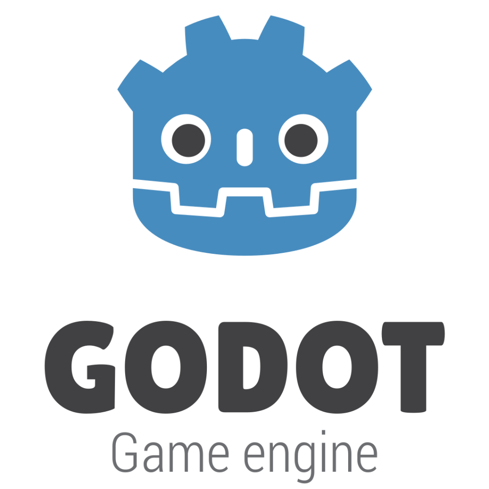
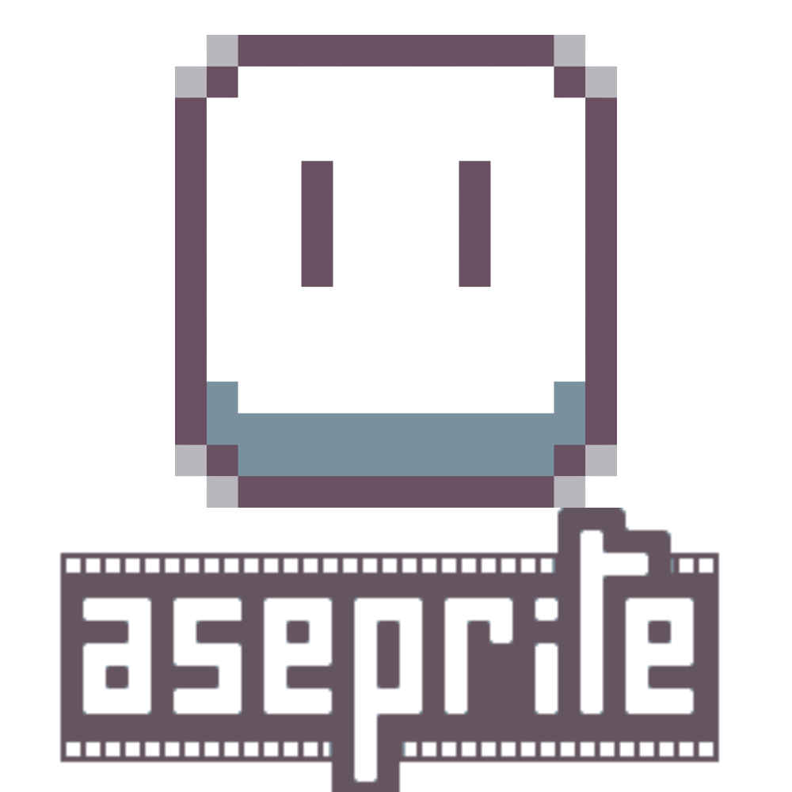

Play as a Presidential candidate in a fictional parallel of our world. Promise increasingly absurd things against your political opponent to win over the public. Your opponent will always take the complete opposing stance that you take.
You can play the game on Itch.io here.
How to Play -- Balance your Money, Morality and approval rate by making insane promises.
You Choose out of a binary of options by clicking the appropriate box to affect your Money, Morality and approval rate, if you go too low on any then its game over, if you fail to get a high enough approval rate then it is also game over.
TECHNICAL INFORMATION
This game was made in the Godot game engine for PC.
I made the game as part of the 'Ukie 2025 Game Jam' with a team of 4.
I was the Lead Programmer and Producer of the whole game with me managing everyone's tasks and the direction of the game.
One technically impressive aspect of the game that I worked on was the 'Crowd' system.
The crowd system was a modularly designed system that generated a crowd based using a random amount of each of the crowd sprites, generate as many crowd members that the user puts into the variable, randomly place the crowd members within three areas designated in the scene and generate the crowd members equally across those three areas.
Additionally I made a shader that changes the color of the crowd sprites and based off of the approval rate variable from the game-loop.
To see this code click this link.
This project was developed using no AI. All assets were custom made for the game by the talented team.
Developed from 12th March - 14th March 2025


Overall, I am generally not super happy with how this project turned out.
This Game Jam was very short (48 hours) and was not only my first Game Jam, but it was also the first time I lead a project and it was all of my teammates first time with Godot.
All of these factors end up bleeding into the final product which is very amateur.
Despite the end product I do think this was a great experience and I would would love to try another group Game Jam in the future using this a learning experience.